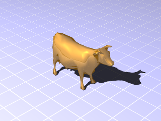

./
visgrpovrayfinish__define.pro
object graphics
includes main-level programAttribute class for VISgrPOVRayPolygons representing the surface properties of objects.
Examples
To create a finish object using one of the finishes named in finish.inc,
use:
finish = obj_new('VISgrPOVRayFinish', finish_name='F_MetalB')
This can then be used in one of the VISgrPOVRay classes like:
cow = obj_new('VISgrPOVRayPolygon', x, y, z, polygons=polylist, $
color=[150, 100, 20], shading=1, $
shininess=25.0, ambient=[150, 100, 20], diffuse=[150, 100, 20], $
finish=finish)
See the example attached to the end of this file as a main-level program
(only available if you have the source code version of this routine):
IDL> .run visgrpovraygrid__define
This should produce:

Class description for visgrpovrayfinish
Inheritance
Properties
- irid_thickness get set init
thickness affects busyness of the iridescence, 0.25 to 1.0 yields best results; iridescence is not used by default, but if any iridescence property is set it is used; default value is 0.5
- diffuse get set init
controls the amount of light from a light source falls on the surface; low values of DIFFUSE will make the surface appear flat; default value is 0.6
- metallic get set init
set to give the surface a more metallic appearance; default value is not metallic
- ambient get set init
controls the amount of ambient light that falls on the surface; increase this amount to increase details in shadows; default value is 0.2
- reflection get set init
amount the surface reflects; generally reflection and diffuse should be inversely proportional; default value is 0.0
- roughness get set init
controls specular highlights in conjunction with SPECULAR; controls the size of the specular highlight, small values make small, tight specular highlights; default value is 0.05
- irid_amount get set init
amount of contribution of iridescence to overall surface color, usually 0.1 to 0.5 is sufficient; iridescence is not used by default, but if any iridescence property is set it is used; default value is 0.35
- finish_name get set init
name of a finish in finish.inc
- brilliance get set init
controls the way that light intensity varies with incidence angle; the default value is 1.0, higher values will cause the light to fall of less at low and medium angles of incidence
- irid_turbulence get set init
slightly difference way to affect thickness, 0.25 to 1.0 work best; iridescence is not used by default, but if any iridescence property is set it is used; default value is 0.5
- specular get set init
controls specular highlights in conjunction with ROUGHNESS; controls the brightness of the specular highlight; default value is 0.0
Routines
visgrpovrayfinish::getProperty, finish_name=finish_name, ambient=ambient, brilliance=brilliance, diffuse=diffuse, metallic=metallic, specular=specular, roughness=roughness, reflection=reflection, irid_amount=irid_amount, irid_thickness=irid_thickness, irid_turbulence=irid_turbulenceGet properties.
visgrpovrayfinish::setProperty, finish_name=finish_name, ambient=ambient, brilliance=brilliance, diffuse=diffuse, metallic=metallic, specular=specular, roughness=roughness, reflection=reflection, irid_amount=irid_amount, irid_thickness=irid_thickness, irid_turbulence=irid_turbulenceSet properties.
result = visgrpovrayfinish::init(finish_name=finish_name, ambient=ambient, brilliance=brilliance, diffuse=diffuse, metallic=metallic, specular=specular, roughness=roughness, reflection=reflection, irid_amount=irid_amount, irid_thickness=irid_thickness, irid_turbulence=irid_turbulence)Create a finish.
visgrpovrayfinish__defineDefine instance variables.
Routine details
topvisgrpovrayfinish::getProperty
visgrpovrayfinish::getProperty, finish_name=finish_name, ambient=ambient, brilliance=brilliance, diffuse=diffuse, metallic=metallic, specular=specular, roughness=roughness, reflection=reflection, irid_amount=irid_amount, irid_thickness=irid_thickness, irid_turbulence=irid_turbulence
Get properties.
Keywords
- finish_name
name of a finish in finish.inc
- ambient
controls the amount of ambient light that falls on the surface; increase this amount to increase details in shadows; default value is 0.2
- brilliance
controls the way that light intensity varies with incidence angle; the default value is 1.0, higher values will cause the light to fall of less at low and medium angles of incidence
- diffuse
controls the amount of light from a light source falls on the surface; low values of DIFFUSE will make the surface appear flat; default value is 0.6
- metallic
set to give the surface a more metallic appearance; default value is not metallic
- specular
controls specular highlights in conjunction with ROUGHNESS; controls the brightness of the specular highlight; default value is 0.0
- roughness
controls specular highlights in conjunction with SPECULAR; controls the size of the specular highlight, small values make small, tight specular highlights; default value is 0.05
- reflection
amount the surface reflects; generally reflection and diffuse should be inversely proportional; default value is 0.0
- irid_amount
amount of contribution of iridescence to overall surface color, usually 0.1 to 0.5 is sufficient; iridescence is not used by default, but if any iridescence property is set it is used; default value is 0.35
- irid_thickness
thickness affects busyness of the iridescence, 0.25 to 1.0 yields best results; iridescence is not used by default, but if any iridescence property is set it is used; default value is 0.5
- irid_turbulence
slightly difference way to affect thickness, 0.25 to 1.0 work best; iridescence is not used by default, but if any iridescence property is set it is used; default value is 0.5
topvisgrpovrayfinish::setProperty
visgrpovrayfinish::setProperty, finish_name=finish_name, ambient=ambient, brilliance=brilliance, diffuse=diffuse, metallic=metallic, specular=specular, roughness=roughness, reflection=reflection, irid_amount=irid_amount, irid_thickness=irid_thickness, irid_turbulence=irid_turbulence
Set properties.
Keywords
- finish_name
name of a finish in finish.inc
- ambient
controls the amount of ambient light that falls on the surface; increase this amount to increase details in shadows; default value is 0.2
- brilliance
controls the way that light intensity varies with incidence angle; the default value is 1.0, higher values will cause the light to fall of less at low and medium angles of incidence
- diffuse
controls the amount of light from a light source falls on the surface; low values of DIFFUSE will make the surface appear flat; default value is 0.6
- metallic
set to give the surface a more metallic appearance; default value is not metallic
- specular
controls specular highlights in conjunction with ROUGHNESS; controls the brightness of the specular highlight; default value is 0.0
- roughness
controls specular highlights in conjunction with SPECULAR; controls the size of the specular highlight, small values make small, tight specular highlights; default value is 0.05
- reflection
amount the surface reflects; generally reflection and diffuse should be inversely proportional; default value is 0.0
- irid_amount
amount of contribution of iridescence to overall surface color, usually 0.1 to 0.5 is sufficient; iridescence is not used by default, but if any iridescence property is set it is used; default value is 0.35
- irid_thickness
thickness affects busyness of the iridescence, 0.25 to 1.0 yields best results; iridescence is not used by default, but if any iridescence property is set it is used; default value is 0.5
- irid_turbulence
slightly difference way to affect thickness, 0.25 to 1.0 work best; iridescence is not used by default, but if any iridescence property is set it is used; default value is 0.5
topvisgrpovrayfinish::init
result = visgrpovrayfinish::init(finish_name=finish_name, ambient=ambient, brilliance=brilliance, diffuse=diffuse, metallic=metallic, specular=specular, roughness=roughness, reflection=reflection, irid_amount=irid_amount, irid_thickness=irid_thickness, irid_turbulence=irid_turbulence)
Create a finish.
Return value
1 for success, 0 for failure
Keywords
- finish_name
name of a finish in finish.inc
- ambient
controls the amount of ambient light that falls on the surface; increase this amount to increase details in shadows; default value is 0.2
- brilliance
controls the way that light intensity varies with incidence angle; the default value is 1.0, higher values will cause the light to fall of less at low and medium angles of incidence
- diffuse
controls the amount of light from a light source falls on the surface; low values of DIFFUSE will make the surface appear flat; default value is 0.6
- metallic
set to give the surface a more metallic appearance; default value is not metallic
- specular
controls specular highlights in conjunction with ROUGHNESS; controls the brightness of the specular highlight; default value is 0.0
- roughness
controls specular highlights in conjunction with SPECULAR; controls the size of the specular highlight, small values make small, tight specular highlights; default value is 0.05
- reflection
amount the surface reflects; generally reflection and diffuse should be inversely proportional; default value is 0.0
- irid_amount
amount of contribution of iridescence to overall surface color, usually 0.1 to 0.5 is sufficient; iridescence is not used by default, but if any iridescence property is set it is used; default value is 0.35
- irid_thickness
thickness affects busyness of the iridescence, 0.25 to 1.0 yields best results; iridescence is not used by default, but if any iridescence property is set it is used; default value is 0.5
- irid_turbulence
slightly difference way to affect thickness, 0.25 to 1.0 work best; iridescence is not used by default, but if any iridescence property is set it is used; default value is 0.5
File attributes
| Modification date: | Thu Jan 29 15:38:23 2009 |
| Lines: | 336 |
| Docformat: | rst rst |